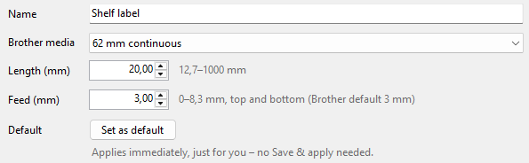
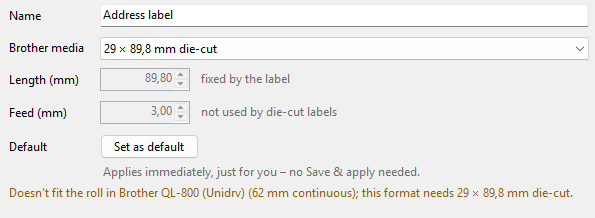

Default format and test print
Both apply to the printer chosen under Printer in the toolbar. The program also asks for the loaded roll and shows which formats fit it (on USB and on the network; a shared printer when the printer status service runs on the PC it is plugged into).
-
Default label format
Choose a format and click Set as default on the right. Programs then start with this paper size on this printer. It applies immediately and just for you, without Save & apply. Your default format is bold in the list.

The Printer menu and the right-click on a format offer the same: Use '…' as default label format.
-
Test print
Choose a format and click Test print. The printer prints a sample label in this format, so you see its size and position.
Before that, the program asks the printer for the loaded roll. If it doesn't fit, you learn that before anything prints: the printer would otherwise stop with a "wrong media" error (red LED). Print anyway? leaves the choice to you. A printer set to Windows' "Use Printer Offline" is reported beforehand too.
-
Grey formats
Grey are the formats that don't fit the loaded roll, and the formats the printer's model can't print. The orange line on the right says why. You can edit all of them. Formats the model can't print can't be test-printed or set as default on this printer.

When you change the roll, the formats for it turn black again as soon as the printer reports it.